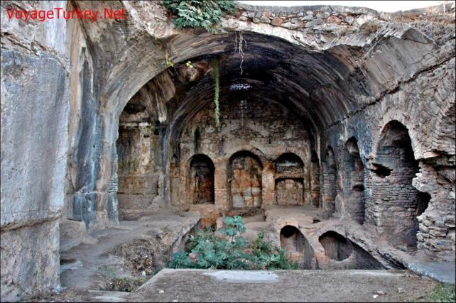

They hid in a cave with the intention of going out to preach on the next day. However, when they slept, they ended up staying there for three hundred years straight.
পরের দিন ধর্মপ্রচারে বের হওয়ার অভিপ্রায়ে তারা একটি গুহায় লুকিয়ে থাকে। যাইহোক, যখন তারা ঘুমিয়েছিল, তারা সেখানে তিনশ বছর ধরে অবস্থান করেছিল।
You would have seen the sun when it rose declining to the right from their cave, and when it set turning away from them, to the left, while they lay in the open space in the midst of the cave.
আপনি সূর্যকে দেখতে পাবেন যখন এটি তাদের গুহা থেকে ডানদিকে নেমে আসে এবং যখন এটি তাদের থেকে সরে যায়, বাম দিকে যায়, যখন তারা গুহার মাঝখানে খোলা জায়গায় শুয়ে থাকে।
From their location, if a man were to look toward due east, he would see the rising sun declining to the right. Similarly, at sunset, the sun would be declining to the left, a pattern that continued throughout the year. This suggests they were located north of the Tropic of Cancer, where the followers of Jesus Christ preached their religion.
তাদের অবস্থান থেকে, একজন মানুষ যদি পূর্ব দিকে তাকায়, সে দেখতে পাবে উদীয়মান সূর্য ডানদিকে ঢলে পড়েছে। একইভাবে, সূর্যাস্তের সময়, সূর্য বাম দিকে হ্রাস পাবে, একটি প্যাটার্ন যা সারা বছর ধরে চলতে থাকে। এটি পরামর্শ দেয় যে তারা কর্কটক্রান্তির উত্তরে অবস্থিত ছিল, যেখানে যীশু খ্রিস্টের অনুসারীরা তাদের ধর্ম প্রচার করেছিলেন।
Such are among the signs of God. He whom God guides is rightly guided, but he whom God leaves to stray, for him will you find no protector to lead him to the right way. You would have deemed them awake, while they were asleep, and We turned them on their right and on their left sides; their dog stretching forth his two fore-legs on the threshold. If you had come up on to them, you would have certainly turned back from them in flight and would certainly have been filled with terror of them.
এগুলো আল্লাহর নিদর্শনাবলীর অন্তর্ভুক্ত। আল্লাহ যাকে পথ দেখান তিনি সৎপথে চলেন, কিন্তু আল্লাহ যাকে পথভ্রষ্ট করেন, তাকে সঠিক পথে নিয়ে যাওয়ার জন্য তুমি কোন অভিভাবক পাবে না। আপনি তাদেরকে জাগ্রত মনে করতেন, যখন তারা ঘুমিয়ে ছিল এবং আমি তাদেরকে তাদের ডানে ও বাম দিকে ফিরিয়ে দিয়েছিলাম। তাদের কুকুরটি তার সামনের দুই পা থ্রেশহোল্ডে প্রসারিত করছে। আপনি যদি তাদের কাছে আসতেন, তবে আপনি অবশ্যই তাদের কাছ থেকে পালিয়ে যেতেন এবং অবশ্যই তাদের ভয়ে ভরে যেতেন।
God looked after them, turning them on their sides to protect them from bedsores.
ঈশ্বর তাদের দেখাশোনা করতেন, তাদের পাশ ঘুরিয়ে বেডসোর থেকে রক্ষা করতেন।
Such, we raised them up that they might question each other: One of them said, "How long have you stayed?" They said, "We have stayed a day, or part of a day." They said, "God knows best how long you have stayed here. Now send you then one of you with this money of yours to the town. Let him find out which is the best food and bring some to you that satisfy your hunger therewith. And let him behave with care and courtesy, and let him not inform any one about you; for if they should come upon you, they would stone you or force you to return to their cult, and in that case, you would never attain prosperity." Thus, did We make their case known to the people that they might know that the promise of God is true, and that there can be no doubt about the Hour of Judgment.
এইভাবে, আমরা তাদের উঠালাম যাতে তারা একে অপরকে প্রশ্ন করতে পারে: তাদের একজন বলল, "তোমরা কতদিন অবস্থান করেছ?" তারা বলল, আমরা এক দিন বা একদিনের কিছু অংশ থেকেছি। তারা বলল, "আপনি এখানে কতদিন অবস্থান করেছেন তা আল্লাহই ভাল জানেন। এখন আপনার এই টাকা দিয়ে আপনার একজনকে শহরে পাঠান। সে খুঁজে বের করে কোনটি সবচেয়ে ভালো খাবার আপনার জন্য নিয়ে আসে যা দিয়ে আপনার ক্ষুধা মেটাবে। এবং সে যত্ন সহকারে এবং সৌজন্যমূলক আচরণ করুক, এবং সে যেন কাউকে আপনার সম্পর্কে না জানায়; কারণ তারা যদি আপনার কাছে আসে বা আপনাকে বাধ্য করে, তাহলে তারা আপনাকে পাথর ছুঁড়ে দিতে বাধ্য করবে। কখনও সমৃদ্ধি অর্জন করবেন না।" এইভাবে, আমি কি তাদের ঘটনা লোকদের কাছে জানিয়ে দিয়েছিলাম যাতে তারা জানতে পারে যে আল্লাহর ওয়াদা সত্য এবং কেয়ামত সম্পর্কে কোন সন্দেহ নেই।
Three hundred years had passed, and the people accepted the true religion. Thus, the Sleepers found God's promise to be true. This serves as a lesson for a preacher: Disbelievers may not respond immediately, but a preacher should not be disheartened. Allah has plan that may span a long period of time; his role is simply to do his part.
তিনশত বছর পেরিয়ে গেছে, মানুষ সত্য ধর্ম গ্রহণ করেছে। এইভাবে, ঘুমন্তরা ঈশ্বরের প্রতিশ্রুতি সত্য বলে মনে করেছিল। এটি একজন প্রচারকের জন্য একটি পাঠ হিসাবে কাজ করে: অবিশ্বাসীরা অবিলম্বে প্রতিক্রিয়া জানাতে পারে না, তবে একজন প্রচারককে হতাশ করা উচিত নয়। আল্লাহর পরিকল্পনা রয়েছে যা দীর্ঘ সময় ব্যাপী হতে পারে; তার ভূমিকা শুধুমাত্র তার অংশ করতে হবে.
Behold, they dispute among themselves as to their affair, said, "Construct a building over them; their Lord knows best about them.‖ Those who prevailed over their affair, said, "Let us surely build a place of worship over them."
দেখ, তারা তাদের বিষয় নিয়ে নিজেদের মধ্যে বিবাদ করছে, বলল, "তাদের উপর একটি ইমারত নির্মাণ কর, তাদের রবই তাদের সম্পর্কে ভাল জানেন।" যারা তাদের ব্যাপারে বিজয়ী হয়েছিল তারা বলল, "আসুন আমরা অবশ্যই তাদের উপর একটি উপাসনালয় নির্মাণ করি।"
They are now known as the ―Seven Sleepers of Ephesus‖. Roman Catholic Church records them as martyrs and saints. FIGURE 18.1: Seven Sleepers of Ephesus

চিত্র 18_1 / Figure 18_1
তারা এখন "ইফিসাসের সাত ঘুমন্ত" নামে পরিচিত। রোমান ক্যাথলিক চার্চ তাদের শহীদ এবং সাধু হিসাবে রেকর্ড করে। চিত্র 18.1: ইফেসাসের সাতজন ঘুমন্ত ব্যক্তি
চিত্র 18_1 / Figure 18_1
Say they were three, the dog being the fourth among them; say they were five, the dog being the sixth—doubtfully guessing at the unknown. Say they were seven, the dog being the eighth; say you, "My Lord knows best their number; none knows them but a few." Enter not therefore into controversies concerning them except on a matter that is clear, nor consult any of them about the Sleepers.
বলুন তারা তিনজন ছিল, কুকুরটি তাদের মধ্যে চতুর্থ ছিল; বলুন যে তারা পাঁচজন ছিল, কুকুরটি ষষ্ঠ - সন্দেহজনকভাবে অজানা অনুমান করা হচ্ছে। বলুন তারা সাতজন ছিল, কুকুরটি অষ্টম; আপনি বলুন, আমার রব তাদের সংখ্যা ভালো জানেন; তাদের সংখ্যা কয়েকজন ছাড়া কেউ জানে না। অতএব স্পষ্ট বিষয় ব্যতীত তাদের বিষয়ে বিতর্কে জড়াবেন না এবং ঘুমানোর বিষয়ে তাদের কারও সাথে পরামর্শ করবেন না।
The verses state, ―nor consult any of them about the Sleepers.‖ Consultation is discouraged, perhaps because some people use the Sleepers' names in black magic, which is a grave sin. About fifty years ago, one of my grandmothers wrote their names in a circle on a small piece of paper, placing it in a box to keep it safe. Although my grandmother and the box are no longer here, the paper occasionally reappears among old papers. I last saw it in 2019, and I believe it still exists somewhere among the old papers in our house. During the time of Jesus Christ, Rome was a superpower, occupying territories around the Mediterranean Sea. After Jesus, Saul (Paul) traveled to Rome and began preaching Christianity, which quietly spread throughout pagan Europe. Alarmed by this growth, Roman emperors often persecuted Christians, sometimes burning them to death or throwing them to lions. These atrocities ceased when Emperor Constantine (272–337 AD) accepted Christianity. He lifted the penalties for professing the faith and returned confiscated properties of the Churches. The story of Ashab al-Kahf (the Companions of the Cave) is narrated in the Christian account as follows: ―The Seven Sleepers of Ephesus was a group of Christian youths who hid inside a cave outside the city of Ephesus around 250 AD, to escape a persecution of Christians being conducted during the reign of the Roman Emperor Dedius. Another version is that Decius ordered them imprisoned in a closed cave to die there as punishment for being Christians. Having fallen asleep inside the cave, they purportedly awoke approximately 180 years later during the reign of Theodosius II, following which they were reportedly seen by the people of the now-Christian city before dying‖– Wikipedia ―The Roman Martyrology mentions the Seven Sleepers of Ephesus under the date of 27 July, as follows: "Commemoration of the seven Holy Sleepers of Ephesus, who, it is recounted, after undergoing martyrdom, rest in peace, awaiting the day of resurrection.‖ The Byzantine Calendar commemorates them with feasts on 4 August and 22 October‖– Wikipedia John (John the Evangelist), one of twelve disciples of Jesus Christ, lived his later life in Ephesus. Seven Sleepers may be his followers. Ephesus was a Greek city that was established in the 10th century BCE. The city went under Roman Empire in 129 BCE. Now it is a part of Turkey.
শ্লোকগুলি বলে, "বা ঘুমানোর বিষয়ে তাদের কারও সাথে পরামর্শ করবেন না।" পরামর্শ নিরুৎসাহিত করা হয়, সম্ভবত কারণ কিছু লোক কালো জাদুতে ঘুমন্তদের নাম ব্যবহার করে, যা একটি গুরুতর পাপ। প্রায় পঞ্চাশ বছর আগে, আমার এক দাদি একটি ছোট কাগজে একটি বৃত্তে তাদের নাম লিখেছিলেন, এটিকে নিরাপদ রাখার জন্য একটি বাক্সে রেখেছিলেন। যদিও আমার ঠাকুমা এবং বাক্সটি এখানে আর নেই, কাগজটি মাঝে মাঝে পুরানো কাগজগুলির মধ্যে আবার দেখা যায়। আমি এটি 2019 সালে শেষ দেখেছিলাম এবং আমি বিশ্বাস করি যে এটি এখনও আমাদের বাড়ির পুরানো কাগজপত্রের মধ্যে কোথাও আছে। যীশু খ্রিস্টের সময়, রোম একটি পরাশক্তি ছিল, ভূমধ্যসাগরের চারপাশের অঞ্চলগুলি দখল করেছিল। যীশুর পরে, শৌল (পল) রোমে ভ্রমণ করেন এবং খ্রিস্টধর্ম প্রচার শুরু করেন, যা নীরবে পৌত্তলিক ইউরোপ জুড়ে ছড়িয়ে পড়ে। এই বৃদ্ধির কারণে শঙ্কিত হয়ে, রোমান সম্রাটরা প্রায়শই খ্রিস্টানদের অত্যাচার করতেন, কখনও কখনও তাদের পুড়িয়ে হত্যা করতেন বা সিংহের কাছে নিক্ষেপ করতেন। সম্রাট কনস্টানটাইন (272-337 খ্রিস্টাব্দ) খ্রিস্টধর্ম গ্রহণ করলে এই নৃশংসতা বন্ধ হয়ে যায়। তিনি বিশ্বাসের দাবির জন্য জরিমানা তুলে নেন এবং চার্চের বাজেয়াপ্ত সম্পত্তি ফিরিয়ে দেন। খ্রিস্টান বর্ণনায় আসাব আল-কাহফের (গুহার সঙ্গীরা) গল্পটি নিম্নরূপ বর্ণিত হয়েছে: “ইফিসাসের সেভেন স্লিপারস ছিল খ্রিস্টান যুবকদের একটি দল যারা 250 খ্রিস্টাব্দের দিকে ইফিসাস শহরের বাইরে একটি গুহার ভিতরে লুকিয়েছিল, রোমান সম্রাটের রাজত্বকালে পরিচালিত খ্রিস্টানদের নিপীড়ন থেকে বাঁচতে। আরেকটি সংস্করণ হল যে ডেসিয়াস তাদের খ্রিস্টান হওয়ার শাস্তি হিসাবে একটি বদ্ধ গুহায় বন্দী করার আদেশ দিয়েছিলেন। গুহার ভিতরে ঘুমিয়ে পড়ার পরে, তারা প্রায় 180 বছর পরে থিওডোসিয়াস II এর রাজত্বকালে জেগে উঠেছিল, যার পরে তারা মৃত্যুর আগে বর্তমান-খ্রিস্টান শহরের লোকেরা দেখেছিল বলে জানা গেছে - উইকিপিডিয়া - রোমান মারটিরোলজিতে উল্লেখ করা হয়েছে যে 7 জুলাই, 7 তারিখের ইফেস-এর অধীনে সেভেন স্লিপারস: "ইফিসাসের সাতজন পবিত্র ঘুমন্ত ব্যক্তিদের স্মৃতিচারণ, যারা শহীদ হওয়ার পর, পুনরুত্থানের দিনের অপেক্ষায়, শান্তিতে বিশ্রাম নিচ্ছেন। ‖ বাইজেন্টাইন ক্যালেন্ডার তাদের 4 আগস্ট এবং 22 অক্টোবর ভোজের সাথে স্মরণ করে‖- উইকিপিডিয়া দ্য উইকিপিডিয়া দ্য উইকিপিডিয়া দ্য উইকিপিডিয়া দ্য উইকিপিডিয়ান জন (Joevanist), লাইভ এ্যাঞ্জেলেস অফ জেসুস। ইফিসাস তার অনুসারী হতে পারে 129 খ্রিস্টপূর্বাব্দে এই শহরটি রোমান সাম্রাজ্যের অধীনে ছিল।
Nor say of anything, "I shall be sure to do so and so tomorrow" without adding, "If God wills!" And call your Lord to mind when you forget and say, "I hope that my Lord will guide me ever closer than this to the right road."
বা কোনো কিছুর বিষয়ে বলবেন না, "আগামীকাল আমি নিশ্চিত হব" যোগ না করে, "আল্লাহ চাইলে!" আর যখন তুমি ভুলে যাও তখন তোমার রবকে স্মরণ কর এবং বল, "আমি আশা করি আমার রব আমাকে এর চেয়েও কাছাকাছি সঠিক পথে পরিচালিত করবেন।"
It seems that these seven planned to go out for preaching on the next day, but missed to say, ―If God Wills.‖ They had slept and woke up after 300 years to see that the people had become Believers.
মনে হচ্ছে এই সাতজন পরের দিন ধর্মপ্রচারের জন্য বের হওয়ার পরিকল্পনা করেছিল, কিন্তু বলতে ভুলে গিয়েছিল, "যদি ঈশ্বর চান।" তারা ঘুমিয়েছিল এবং 300 বছর পরে জেগেছিল দেখেছিল যে লোকেরা বিশ্বাসী হয়েছে।
So, they stayed in their cave three hundred years, and add nine. Say: God knows best how long they stayed. With Him are the secrets of the Skies and Lands; how clearly He sees; how finely He hears! They have no protector other than Him, nor does He share His Command with any person whatsoever. Remarks:
সুতরাং, তারা তাদের গুহায় তিনশ বছর অবস্থান করেছিল এবং নয়টি যোগ করে। বলুন, তারা কতদিন অবস্থান করেছিল আল্লাহই ভালো জানেন। আকাশ ও জমিনের গোপনীয়তা তাঁর কাছেই রয়েছে। তিনি কত স্পষ্টভাবে দেখেন; তিনি কত সুন্দরভাবে শোনেন! তিনি ব্যতীত তাদের কোন অভিভাবক নেই এবং তিনি কোন ব্যক্তির সাথে তাঁর আদেশ ভাগ করেন না। মন্তব্য:
It was 300 solar years. In lunar calendar, it is 309.
এটি ছিল 300 সৌর বছর। চন্দ্র ক্যালেন্ডারে, এটি 309।
And recite what has been revealed to you of the Book of your Lord; none can change His words, and none will you find as a refuge other than Him. And keep your soul content with those who call on their Lord morning and evening seeking His face and let not your eyes pass beyond them seeking the pomp and glitter of this life, nor obey any whose heart We have permitted to neglect the remembrance of Us—one, who follows his own desires, whose case has gone beyond all bounds.
আপনার প্রতিপালকের কিতাব থেকে আপনার প্রতি যা অবতীর্ণ হয়েছে তা পাঠ করুন। কেউ তাঁর বাণী পরিবর্তন করতে পারে না এবং তিনি ছাড়া আর কাউকে আশ্রয় হিসেবে পাবেন না। এবং আপনার আত্মাকে তাদের সাথে সন্তুষ্ট রাখুন যারা সকাল-সন্ধ্যা তাদের রবকে তাঁর মুখের সন্ধানে ডাকে এবং আপনার দৃষ্টি তাদের পার্থিব জীবনের আড়ম্বর ও চাকচিক্যের সন্ধানে তাদের অতিক্রম না করুক, এবং যার অন্তরকে আমরা আমাদের স্মরণে অবহেলা করার অনুমতি দিয়েছি তার আনুগত্য করবেন না - যিনি নিজের প্রবৃত্তির অনুসরণ করেন, যার অবস্থা সমস্ত সীমা ছাড়িয়ে গেছে।
The paragraph above describes what a man devoted to Sufi endeavors should do and from whom he should distance himself.
উপরের অনুচ্ছেদটি বর্ণনা করে যে সুফি প্রচেষ্টায় নিবেদিত একজন ব্যক্তির কী করা উচিত এবং কার থেকে তার নিজেকে দূরে রাখা উচিত।